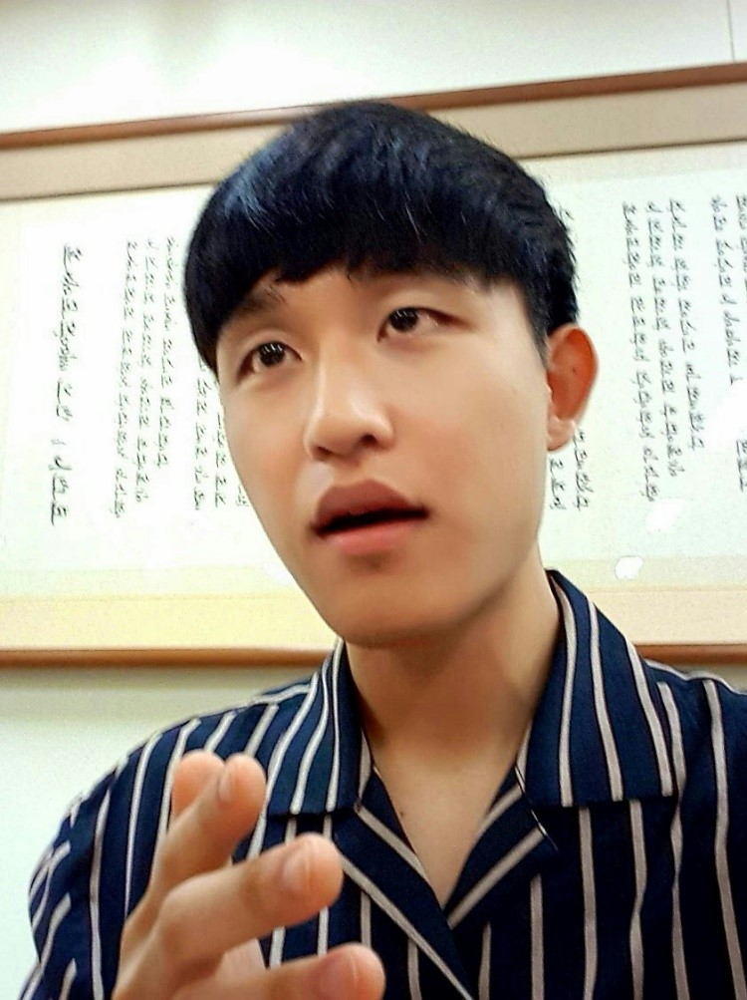

미래의 빅데이터 전략가 이명우입니다. 저는 처음에 신문방송학과(현 미디어커뮤니케이션학과)로 전공을 시작한 순수 문과학생입니다. 하지만 급변하는 현대사회의 미디어를 공부하면서, 컴퓨팅 환경 특히 빅데이터를 이해하고 다룰 줄 아는 것이야 말로, 앞으로 미디어 뿐만 아니라 다양한 분야에서 전략을 수립하고 의사결정을 하는데 큰 힘이 될 거라 판단했습니다. 따라서 현재 학교의 글로벌미디어소프트웨어(이하 GM) 융합연계전공을 이수하는 중이며, 데이터 관련 컴퓨팅 능력을 기르기 위해 노력 중입니다.
자기소개
